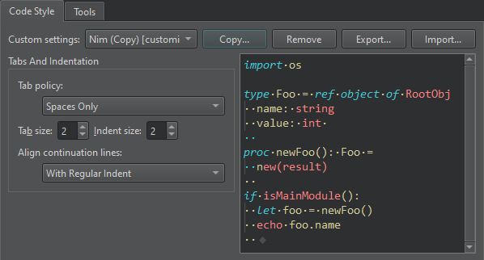
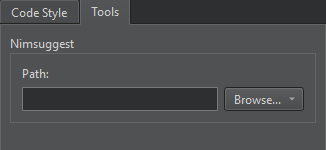

Nim
Set Nim code style and paths to tools.
Code Style
To specify preferences for the Nim editor (experimental):
- Go to Preferences > Nim.
- In Custom settings, select the settings to modify, and then select Copy.

- Give a name to the settings, and select OK.
- Specify how to interpret the Tab key presses and how to align continuation lines.
- Select OK to save the settings.
To specify different settings for a particular project, select Projects > Code Style.
Tools
You can use the Nimsuggest tool to query .nim source files and obtain suggestions for code completion.
To use Nimsuggest, you must install it on the development PC and enter the path to the tool executable in Path.

See also Add code snippets to the auto-complete menu, Complete code, Find preferences, Indent text or code, Specify code style, Completion, Nimble, and Snippets.